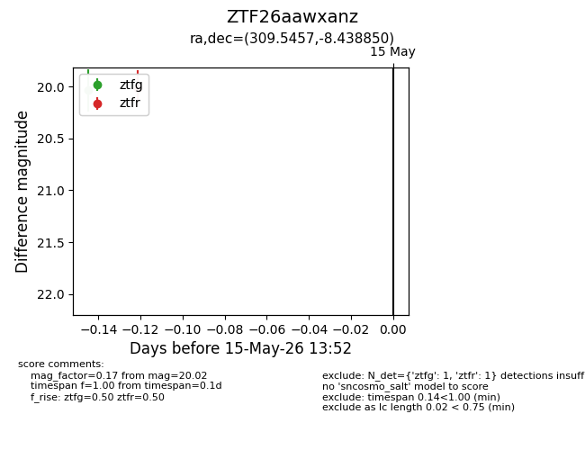
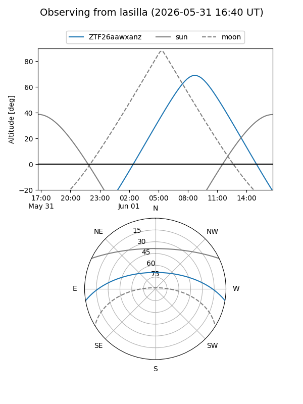
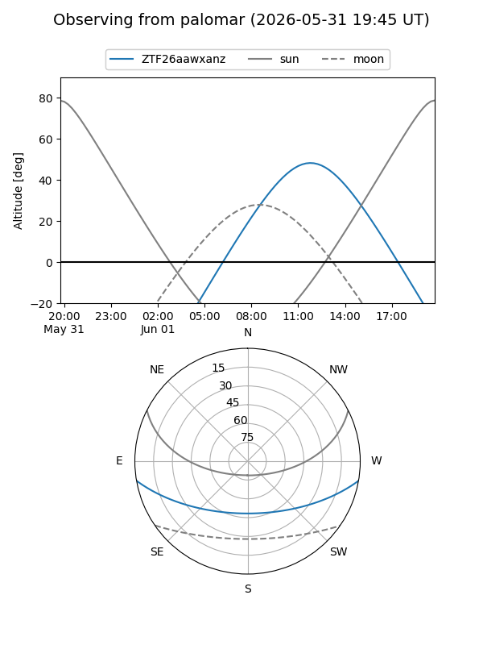
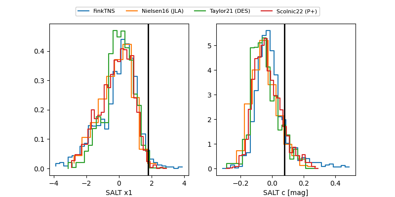

ZTF26aawxanz
Target ZTF26aawxanz at 2026-05-15 13:54
Aliases and brokers:
FINK: link
Lasair: link
ALeRCE: link
alt names
ZTF26aawxanz (ztf,fink_ztf)
Coordinates:
equatorial (ra, dec) = 309.5457,-8.43885
equatorial (HMS+DMS) = 20:38:10.96,-08:26:19.86
galactic (l, b) = (37.5866,-27.53477)
Flags:
Photometry:
last ztfg=20.04, ztfr=20.02
1 ztfg, 1 ztfr detections
Lightcurve

Visibility


Additional plots
